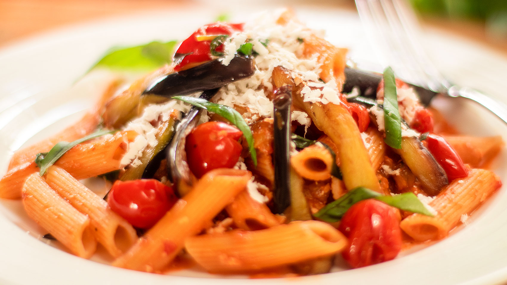

Pasta alla Norma

Hearty pasta prepared with eggplants in a tomato sauce
Originally from Roma, this simple, yet flavourful dish is a mainstay with the locals. It's central pull is its
ability to be crafted to individual preferences due to its simplicity.
While many prefer the richness of Rigatoni Carbonara or the basic, but
delightful, Bucatini Amatriciana, Pasta alla Norma has its own dedicated
following.
Ingredients
- Whole-graine pasta
- Fresh aubergine
- Ripe, red tomato
- Choice riccota cheese
- Fresh garlic bulbs
- Basil leaves
Optional Ingredients
- Grated parmesano
- Sliced red onion
- Chopped yellow chili pepper
Steps
- Slice aubergine and coat with olive oil and basil
- Dice tomatoes and chop garlic into fine pieces
- Bring water to a boil
- Add pasta to the water and let boil for 5-8 minutes or until tender. Stir pasta occassionally
- In the meantime, place the chopped tomatoes, garlic, and basil into a sauce pan and simmer
- Strain pasta and serve
- Pour the tomato sauce over the pasta
- Add riccotta and extra olive oil if desired
- Enjoy
Back to the Top
Home